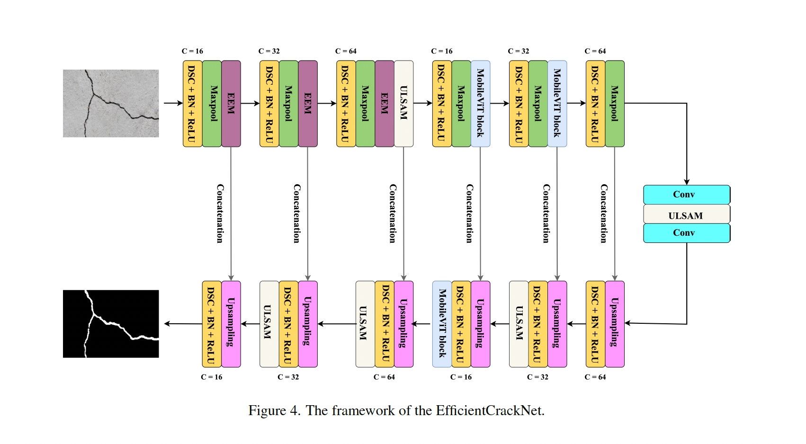

“The important thing is not to stop questioning. Curiosity has its own reason for existence.
One cannot help but be in awe when contemplating the mysteries of eternity, of life, of the marvelous structure of reality.
It is enough if one tries merely to comprehend a little of this mystery each day.”
– Albert Einstein
My research interests lie primarily in the areas of machine learning, deep learning, computer vision, and robotics.
Since the summer of 2023, I have been working as a Research Intern at Tohoku University, under the supervision of Dr. Minoru Kuribayashi, focusing on computer vision-related problems.
I have also been fortunate to collaborate with academic faculty members and institutions during my undergraduate years, including Dr. Asad Malik (Monash University Malaysia); Dr. Zaid Al-Huda (Stirling College, Chengdu University, China); Dr. Hanzhou Wu (Shanghai University, China); Dr. Sajjad Arif (Aligarh Muslim University (AMU), India); Dr. Saleem Anwar Khan (Aligarh Muslim University (AMU), India); and Dr. Intesaaf Ashraf (University College London).
My research interests broadly encompass machine learning, deep learning, computer vision, and robotics. I am interested in developing deep learning techniques to make AI more affordable and accessible globally. My broader interests include 2D/3D segmentation, generative networks, video understanding, and representation learning. I am also focused on advancing robotic intelligence for performing challenging and high-risk tasks.
News
October, 2024: One paper accepted at WACV 2025.
September, 2024: One paper accepted at APSIPA ASC 2024.
April, 2024: Started working as a Research Assistant at Monash University, Malaysia.
October, 2023: Started working as an Undergraduate Research Assistant at ZHCET, AMU, India.
October, 2023: One paper accepted in Materials Today Communications, Elsevier.
July, 2023: Started working as a Research Assistant at Tohoku University, Japan.
Selected Publications
See my Google Scholar profile for the complete and most recent publications.

EfficientCrackNet: A Lightweight Model for Crack Segmentation
Authors: Abid Hasan Zim, Aquib Iqbal, Zaid Al-Huda, Asad Malik, and Minoru Kuribayashi.
A Vision Transformer-Based Approach to Bearing Fault Classification via Vibration Signals
Authors: Abid Hasan Zim, Aeyan Ashraf, Aquib Iqbal, Asad Malik, and Minoru Kuribayashi.
Proceedings of 2022 Asia-Pacific Signal and Information Processing Association Annual Summit and Conference (APSIPA ASC 2022), pp. 1321–1326. doi: 10.23919/APSIPAASC55919.2022.9980013.
Short-Term Weather Forecasting for Wind Energy Generation Using a Deep Learning Technique
Authors: Abid Hasan Zim, Mohammad Zeyad, S. M. Masum Ahmed, and Eftakhar Hossain.
Proceedings of International Conference on Smart Systems and Technologies (SST 2022), pp. 41–46. doi: 10.1109/SST55530.2022.9954683.
TCNFormer: Temporal Convolutional Network Former for Short-Term Wind Speed Forecasting
Authors: Abid Hasan Zim, Aquib Iqbal, Asad Malik, Zhicheng Dong, and Hanzhou Wu.
Under Review at Nature Sustainability, 2024.
DNBDNN: Decorrelation Nested Bayesian Deep Neural Network to Estimate the Hardness of Friction Stir Welding
Authors: Abid Hasan Zim, Abdul Samad, Sajjad Arif, and Asad Malik.
Under Review at Ain Shams Engineering Journal, 2024.
SCNN-LSTAM: Spatial Convolutional Neural Network - Long Short-Term Attention Memory Network for Tomato Leaf Diseases Classification
Authors: Abid Hasan Zim, Md. Asaduzzaman Tonmoy, Aquib Iqbal, Saleem Anwar Khan, and Intesaaf Ashraf.
Under Review at Signal Processing: Image Communication, 2024.
{kind=link}